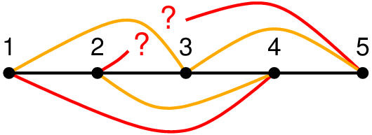

|
Here is a puzzle: Draw some points and connect them by lines
to form a path, like the five points on the right connected
by the lines in black.
Now connect with further lines, in orange, say, any two points that are two apart (this is called the "square" of the path), here points 1 and 3, 2 and 4, 3 and 5, but so that no two lines intersect (that is, the resulting graph must be planar). The next challenge is to further connect, with red lines, say, any two points that are three apart (which defines the "cube" of the path), here points 1 and 4, and 2 and 5. Again, the lines must not intersect. This can be done for any number of points. Try first on your own to find a solution! The animation below shows a solution with two ways to draw the graph. |

The attempt above fails because 1 and 5 can be connected but do not have to be. This cannot be right because the cube of a path is maximally planar, which means that no further points can be connected with non-intersecting lines. Written by Bernhard von Stengel while learning JavaScript. |